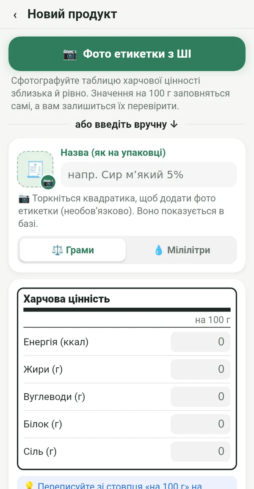
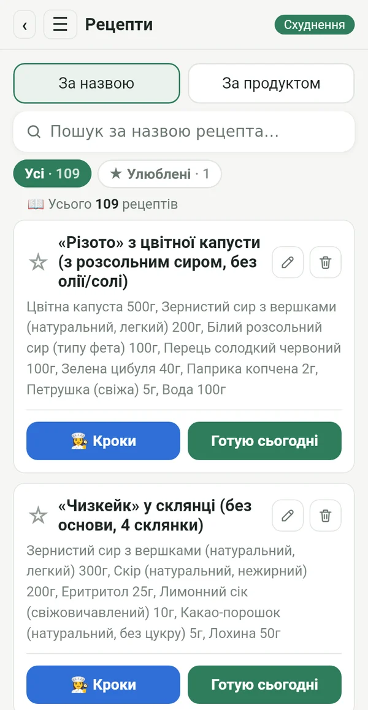
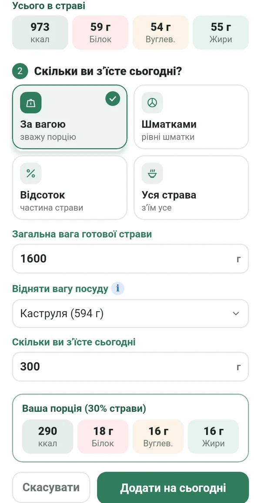
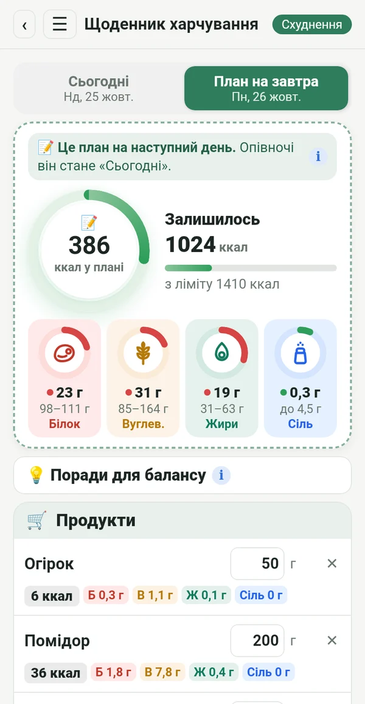
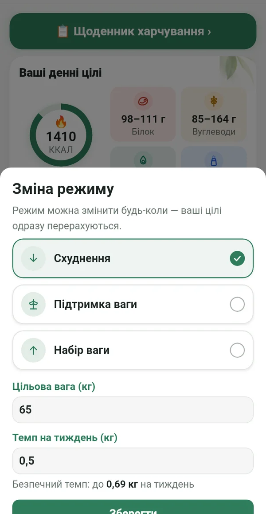
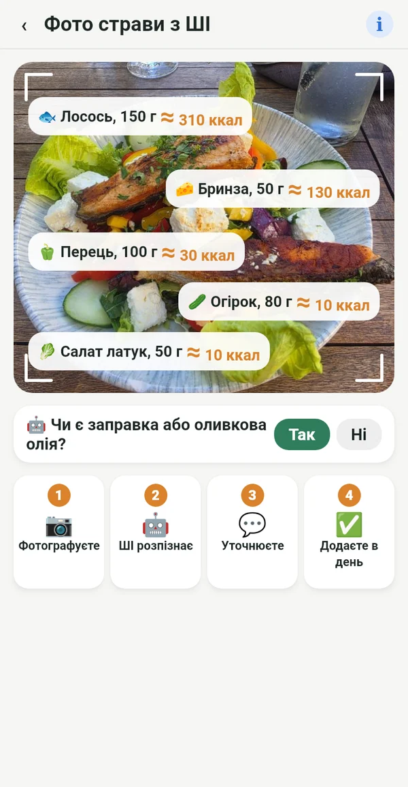

Усе, що потрібно, і нічого зайвого

З етикетки, а не з чужих баз
Перепишіть значення на 100 г з упаковки або просто сфотографуйте етикетку. Цифри збігаються з тим, що ви справді їсте.
📷 Фото етикетки з ШІ заповнить поля за вас
Ваша електронна кулінарна книга
Рецепти з бабусиного зошита, з кулінарних книг на полиці та з улюблених груп, усе в одному місці. Вносите один раз і користуєтеся завжди.

Точна порція з усієї каструлі
Зважте готову страву разом із посудом. Macrolia відніме вагу каструлі й порахує, скільки саме ви з’їли.

Плануєте, купуєте, їсте
Уже сьогодні вносите, що їстимете завтра. Купуєте лише потрібне, а опівночі план стає вашим днем.

Схуднення, підтримка або набір ваги
Досягнувши цілі, переходите на «Підтримка ваги». Якщо життя змінюється, просто змініть режим. Денний ліміт розраховується за формулою Міффліна-Сан Жеора та клінічними рекомендаціями, у безпечному темпі.

І поза домом ви знаєте, що їсте
Сфотографуйте тарілку, і ШІ розпізнає, що на ній. Значення приблизне й позначене ≈. Краще приблизно, ніж ніяк.
Калорії від руху
Через Health Connect: з телефона, годинника або фітнес-застосунку. Ви обираєте, скільки додати до ліміту.
Вага, графік, звіт
Графік ваги, фото «до і після» тільки для вас і звіт у PDF та Excel.
Поради щодо балансу
Короткі підказки, коли білки чи жири виходять за ціль. Допомагає, а не командує.
Для кожної, хто хоче залишатися в режимі
Йо-йо не від режиму. Воно приходить, коли ти зупиняєшся.
Після малюка ти знову входиш у режим.
Вік не привід здаватися.
І в ресторані ти знаєш, що замовити.
Хто точно дотримується плану, отримує точний результат.
Ваші дані належать лише вам
Усе залишається на вашому телефоні. Без реєстрації, реклами та стеження. Фото для аналізу ШІ надсилається лише для розрахунку й не зберігається.
Підписка
Місячна або річна підписка, обидві з 7 безкоштовними днями. Скасувати можна будь-коли в Google Play.
14 мовами, зі світлою та темною темою.
Запитання
Коли вийде застосунок?
Ми готуємо запуск у Google Play. Напишіть нам, і ми повідомимо, коли все буде готово.
Чи є версія для iPhone?
Поки лише для Android. Версію для iPhone заплановано пізніше.
Чому немає сканера штрихкодів?
Бази штрихкодів заповнюють користувачі, і в них часто помилки або застарілі дані. У Macrolia кожне значення береться з етикетки, тому цифри точні.
Скільки фото з ШІ можна зробити?
До 100 фото на місяць, для етикеток і страв разом.